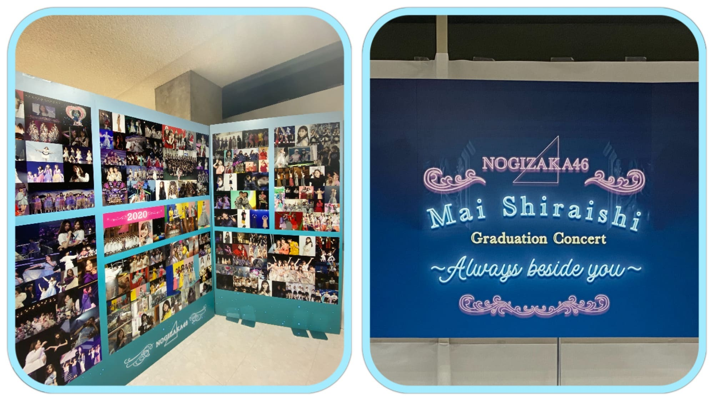
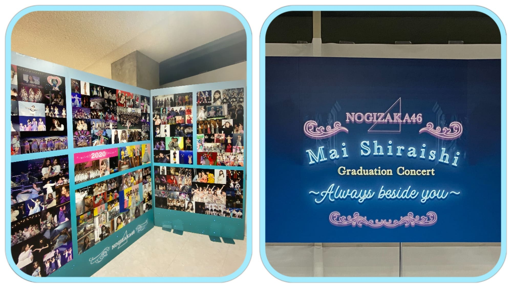

2020/1029Thu『さよならをありがとう。』 ☺︎ 黒見明香(16)
大切な一日。
乃木坂46 新４期生の黒見明香です。
すこーしだけ自己紹介させてください✨
♪:*:･･:*:･･:*:･･:*:･･:*:･･:*:･♪:*:･･:*:･･:*:･･:*:･･:*:･･:*:･♪
黒見 明香（くろみ はるか）
2004年1月19日生まれ 16才
香港生まれ・東京都出身です
あだ名： くろみん・黒見ちゃん
3の倍数9・6・3(くろみ)
と覚えてもらえたら嬉しいです♪
♪:*:･･:*:･･:*:･･:*:･･:*:･･:*:･♪:*:･･:*:･･:*:･･:*:･･:*:･･:*:･♪


-:-:୨୧:-:- 初めての乃木坂カラーのビブス✨
ブログやお手紙で、たくさんのコメントや感想送って下さり
本当にありがとうございます✩︎⡱
今回、初めてコメントしました！というあなたも、
こないだの続きだよー！と教えて下さるあなたも、
大切な時間を使ってお話しして下さり
本当にありがとうございます✨
あなたに出逢えた奇跡に、感謝しながら、
大事に、一つずつ全部読ませて頂いています((〃ω〃))
皆さんのことを知ることが出来る、
私の１日の中で『１番幸せな時間』です♩
明日は、馬車に乗るお姫様 璃果ちゃんですよー♬
読んでくださり、本当にありがとうございます☺︎
次回も、会えたら嬉しいなぁ✨
またねヾ(･ω･*)
くろみはるか☺︎
☆ 本日のあなたのラッキーナンバー：❹ と ❻
♪:*:･･:*:･･:*:･･:*:･･:*:･･:*:･♪:*:･･:*:･･:*:･･:*:･･:*:･･:*:･♪
・
・
・
＜ちょこっとアンコール♬笑＞
そして、お誕生日を迎えるあなたへ・・
✨HAPPY BIRTHDAY✨
どうぞ素敵な一年になりますよう✩︎⡱
♪:*:･･:*:･･:*:･･:*:･･:*:･･:*:･♪:*:･･:*:･･:*:･･:*:･･:*:･･:*:･♪
ここまで読んでくださったアナタ、ほんとうにありがとう♡
またねヾ(･ω･*)
白石麻衣さんの卒業コンサート
『乃木坂46 NOGIZAKA46 Mai Shiraishi Graduation Concert 〜Always beside you〜』
本当にありがとうございました。
♬ *。♩*。♬
余韻の覚めない中、
ココを 見てくださり ありがとうございます☺︎
乃木坂46 新４期生の黒見明香です。
すこーしだけ自己紹介させてください✨
♪:*:･･:*:･･:*:･･:*:･･:*:･･:*:･♪:*:･･:*:･･:*:･･:*:･･:*:･･:*:･♪
黒見 明香（くろみ はるか）
2004年1月19日生まれ 16才
香港生まれ・東京都出身です
あだ名： くろみん・黒見ちゃん
3の倍数9・6・3(くろみ)
と覚えてもらえたら嬉しいです♪
♪:*:･･:*:･･:*:･･:*:･･:*:･･:*:･♪:*:･･:*:･･:*:･･:*:･･:*:･･:*:･♪
-:-:୨୧:-:- 乃木坂カラーの 白石麻衣さん♡にとって最後の歌衣装、そして私に取って初めての歌衣装...
開演前、キャプテンの真夏さんに代わって
白石さんが 円陣の「掛け声」をかけて下さいました。
みんな大好きな、大好きな白石麻衣さん・・・
リハーサルから、涙しちゃうメンバーも多く
こみあげる想いを必死で抑えながら
笑顔になろうと頑張っていました。
＊
白石さんが、最後に、
『９年間、楽しい思い出ばかりで、
こんな幸せでいいのかなと思う...』
と、お話しして下さいました... ｡ﾟ(｡ﾉω＼｡)ﾟ｡
嬉しいことも辛いことも、共に乗り越えてきて下さった
大好きな先輩方、支えて下さったたくさんのスタッフの皆さま、
そして
応援して下さり、力になって支えて下さった
大切なファンの皆さま。
＊
最後の1日を、大切な先輩の卒業式を
一緒に見届けて下さり
本当にありがとうございました。
♪:*:･･:*:･･:*:･･:*:･･:*:･･:*:･♪:*:･･:*:･･:*:･･:*:･･:*:･･:*:･♪

-:-:୨୧:-:- 「世界で一番孤独なLover」で着せて頂いた、大切な深紅の衣装です
キャプテンの真夏さん♡は
いっぱい、いっぱい、自分の涙を我慢して、
『みんなで声出して、盛り上げていこうねーっ！』
と明るく笑顔で、メンバーを激励し、お話してくれました...
＊
本番当日も、ギリギリまで、
白石さんと真夏さんのお二人が
「ちょっとやめてよー♡」といつもどおりの、
可愛く仲良くお話しされていらっしゃるお姿にも、
"やっぱ乃木坂だな"と、なんだか胸がジーンとしてしまいました...\\\
＊
ガールズルールでは
送ってくださった皆さんの掛け声と一緒に、
全員で笑顔で✨本編を終えることが出来て、
直接会場で会うことは叶わなくても、
皆さんのパワーを、お姿をいっぱい感じて、
本当に幸せでした。応援ありがとうございます。
♬ *。♩*。♬
楽屋に入っていらっしゃった白石さんが、
たまたま わたしの目の前に
座ってくださいました(*´-`)♡
白石さんご自身で、
心を込め一つ一つ、
９年間の思いをかみしめるように
メイクをされ、準備をされていらっしゃる
凛とした美しいお姿✨に
目を奪われてしまいました。。
＊
一人、勇気をふりしぼって、
ご挨拶させて頂いたとき、
柔らかい笑顔で、優しくお話しして頂いたこと、
ずっとずっと忘れません。
大切な想い出です✩︎⡱
＊
これからも、ずっと乃木坂を
私たちの成長を、見守っていて下さる素敵な大好きな方です。
＊
白石さんが、先輩方が連れてきて下さった坂を
これからも、あなたも一緒に、
悩んだり遠回りしたりしながらも、
上ってくれたら嬉しいです(*´-`)
♪:*:･･:*:･･:*:･･:*:･･:*:･･:*:･♪:*:･･:*:･･:*:･･:*:･･:*:･･:*:･♪

-:-:୨୧:-:- 愛される白石麻衣さん♡の 思い出と愛が詰まっている会場の装飾✩︎⡱
♪:*:･･:*:･･:*:･･:*:･･:*:･･:*:･♪:*:･･:*:･･:*:･･:*:･･:*:･･:*:･♪

-:-:୨୧:-:- 愛される白石麻衣さん♡の 思い出と愛が詰まっている会場の装飾✩︎⡱
長いたくさんの歴史の、最後の年に、
ご一緒させていただけたこと、
一生忘れません。。。
会場のホールにも、お花にも、
白石麻衣さんを応援する皆さんからの
愛がたくさん、たくさん溢れていました (*ˊᵕˋ*)੭
＊
わたし自身は、白石さんの優しいお顔を見て、
泣かないよう...笑顔がぎこちなくなっていたり...
たくさんの反省があります。。。
＊
それでも、乃木坂のメンバーとして
教えて頂いた大切なこと
先輩たちが見せて下さった美しいお姿、
ひたむきさ、努力、感謝、そして笑顔・・・
必ず、大切な乃木坂に、少しでも役立てる人となれるよう
教えに生かして、精一杯努めます (. ≧ω≦)ﾉ
♬ *。♩*。♬
⚫︎笑顔で見送ってあげてください。私もパソコンの前で見送ります！！
⚫︎らじらーで徳井さんが言ってた「卒業は何かの入学」というのを参考に、これからの活躍を応援。
⚫︎らじらーで徳井さんが言ってた「卒業は何かの入学」というのを参考に、これからの活躍を応援。
ステップアップなんだよ、夢を叶えて旅立つんだよ、ジコチューのように「人生はあっという間だ！」なんだよ・・・と、コメントで励ましやアドバイスたくさん教えてくださって本当にありがとうございます。
一つ一つ大切に、胸に刻んで、
今、寂しい気持ちを奮い立たせています><
⚫︎乃木坂工事中で中田花奈さんがボードに「くろみ」って書いてくれたね！凄いね！
⚫︎お二人は、今後も芸能活動されるみたいですので、またご一緒出来たら良いですね。
花奈さんの解答びっくりしました！((〃ω〃))
そして嬉しくて、
しばらく動けなかったです。。。
"乃木坂をよろしくね(・ωｰ)" と冗談まじりに、
掛けてくださった言葉を、何度も何度も思い出しています。
＊
いつの日か、またご一緒させていただける日が来るよう
わたしも全力で頑張らなくちゃですね！
寂しいですが・・・
ご卒業おめでとうございます✨
白石麻衣さん♡中田花奈さん♡ お二人のこれからが
幸せあふれる楽しい毎日でありますように (*ˊᵕˋ*)੭
♪:*:･･:*:･･:*:･･:*:･･:*:･･:*:･♪:*:･･:*:･･:*:･･:*:･･:*:･･:*:･♪
-:-:୨୧:-:- 初めての乃木坂カラーのビブス✨
今月の 「TOKYO IDOL FESTIVAL オンライン2020」そして
「乃木坂46 NOGIZAKA46 Mai Shiraishi Graduation Concert
〜Always beside you〜」
と、練習するにあたって、
初めての「乃木坂カラーのビブス✨」を
使わせていただきました！
＊
坂道研修生で、初めて"東名阪ツアーをさせて頂ける"と聞いて、
真っ白なビブスを頂いたあの日の感動も、
乃木坂カラーの、いつも映像で見て憧れていた
先輩方とお揃いのビブスを頂いたこの日の感動も、
昨日のことにように、鮮明に覚えています。
＊
新4期の5人で
「うわぁ....((〃ω〃))」と目を見合わせて幸せをかみしめていました。
♬ *。♩*。♬
⚫︎オンラインだけど、見送ることが出来てよかったです！
ライブビューイングのチケットも当てられず、
"あぁ...今頃Overtureかなぁ。。。" と自分が情けなく、
自分の運のなさに、悔し涙した経験を思い出しています。
今も時々、願いを込めながら、息を潜めて、
チケット当落メールを確認する夢を見る日があります...\(//∇//)\
＊
直接ライブで皆さんのお顔を見て
楽曲を伝える、一緒に空間を共有することが出来なくて
とても悔しいけれど,,,
この景色を、表情を
オンラインでたくさんの方に、
お届けできたこと、
白石麻衣さんの卒業する日を
見守っていただけたことを、嬉しく思います☺︎
＊
＊カタカナ苦手な私には、
「ライビュヴーインあるって！」友達に送って
「なんか間違ってるけど、察した」・・・Σ（ﾟдﾟll）
と返された思い出があります\(//∇//)\
『らいぶ・びゅーいんぐ』 難問ですよね！笑
（今、辞書で調べてから書きました汗）
♪:*:･･:*:･･:*:･･:*:･･:*:･･:*:･♪:*:･･:*:･･:*:･･:*:･･:*:･･:*:･♪
【 ノギザカスキッツACT2 】
とってもありがたいことに、
11月10日スタート『２nd シーズン』
放送させて頂くことが決定しましたー！
３期生の先輩方も参戦されてパワーアップです✩︎⡱
⚫︎先輩方を見たら、一緒にお芝居をしたら、また何か「ヒント」になるかもしれないね。
4期生の皆んなで、さすが！先輩方はすごいね✨と
演技力・トーク力と感動していました〜
私たちもパワーアップしなければですね！
楽しんで、頑張るねー (*ˊᵕˋ*)੭
♬ *。♩*。♬
⚫︎「an・an」さんに、来月メンバー皆で登場と聞きました。初の女性誌かな!?
こちらも、嬉しすぎることに、全員登場させていただきます♪
またオフショットなど載せさせてくださいねヾ(･ω･*)o
♪:*:･･:*:･･:*:･･:*:･･:*:･･:*:･♪:*:･･:*:･･:*:･･:*:･･:*:･･:*:･♪
♪:*:･･:*:･･:*:･･:*:･･:*:･･:*:･♪:*:･･:*:･･:*:･･:*:･･:*:･･:*:･♪
ブログやお手紙で、たくさんのコメントや感想送って下さり
本当にありがとうございます✩︎⡱
今回、初めてコメントしました！というあなたも、
こないだの続きだよー！と教えて下さるあなたも、
大切な時間を使ってお話しして下さり
本当にありがとうございます✨
あなたに出逢えた奇跡に、感謝しながら、
大事に、一つずつ全部読ませて頂いています((〃ω〃))
皆さんのことを知ることが出来る、
私の１日の中で『１番幸せな時間』です♩
ー " 夢を見るなら君と一緒がいい " (*´-`)
直接お話しできる時が、 待ち遠しいです✩︎⡱
＊
寝不足が続いたり、すっかり肌寒くなってきちゃって、
なんだか体調イマイチだよー、疲れちゃったよーって方も
本当に、今日も一日 お疲れ様でした✩︎⡱
きっと心も、身体も、しんどい時もあるかと思います。。
どうぞ、皆さんが 少しでも
ひとときリラックスできますように...✩︎⡱
と願っています(*´-`)
初めて会える日を、楽しみに待っています♪
＊
かぼちゃの馬車に乗ってきた奈於ちゃん♡
＊
寝不足が続いたり、すっかり肌寒くなってきちゃって、
なんだか体調イマイチだよー、疲れちゃったよーって方も
本当に、今日も一日 お疲れ様でした✩︎⡱
きっと心も、身体も、しんどい時もあるかと思います。。
どうぞ、皆さんが 少しでも
ひとときリラックスできますように...✩︎⡱
と願っています(*´-`)
初めて会える日を、楽しみに待っています♪
＊
かぼちゃの馬車に乗ってきた奈於ちゃん♡
明日は、馬車に乗るお姫様 璃果ちゃんですよー♬
読んでくださり、本当にありがとうございます☺︎
次回も、会えたら嬉しいなぁ✨
またねヾ(･ω･*)
くろみはるか☺︎
☆ 本日のあなたのラッキーナンバー：❹ と ❻
♪:*:･･:*:･･:*:･･:*:･･:*:･･:*:･♪:*:･･:*:･･:*:･･:*:･･:*:･･:*:･♪
・
・
・
＜ちょこっとアンコール♬笑＞
♬ *。♩*。♬
⚫︎私は櫻坂46新2期生とのエピソードも教えてください。
○ライブ前にも 激励のメッセージを送ってくれて
すごく力になりました！温かい大切な仲間です☺︎
♬ *。♩*。♬
⚫︎和ラーにお湯を入れて、3分待って、ふたをとったら、黒見ちゃんのサインが出てきた。
○嬉しいー (*ˊᵕˋ*)੭
いっぱい召し上がってくださいね✨
♬ *。♩*。♬
⚫︎次回ブログは10月29日。去年なら研修生ツアー初日の前日ですね。
○もう一年ですね。とっても緊張していましたー汗
大沼晶保ちゃんと部屋でドキドキしていました☺︎
♬ *。♩*。♬
♬ *。♩*。♬
⚫︎くろみん勉強頑張って(/･ω･)/あっ、新4期生の中で「おバカキャラ」と聞かれたら、「くろみん」と選んだ子も確か居たよね？（笑）
⚫︎追試はもう終わりましたか？ まだでしたら、がんばってください！
○今日数学のテスト受けてきたよー\(//∇//)\笑
⚫︎追試はもう終わりましたか？ まだでしたら、がんばってください！
○今日数学のテスト受けてきたよー\(//∇//)\笑
頑張ります！ありがとうー☺︎
♬ *。♩*。♬
⚫︎今日はフィンランドのサンタクロースから大切なお知らせがあったよ。
「クリスマスは中止しない」（byサンタ）コロナ渦で心配だったけど、良かったね。くろみん。何をお願いする？プレステ？ステッキのリベンジ？
♬ *。♩*。♬
⚫︎今日はフィンランドのサンタクロースから大切なお知らせがあったよ。
「クリスマスは中止しない」（byサンタ）コロナ渦で心配だったけど、良かったね。くろみん。何をお願いする？プレステ？ステッキのリベンジ？
○本当に良かったです((〃ω〃))
子どもたちも幸せになるといいなー✨
わたしも、こっそり熟考します笑フフ
♬ *。♩*。♬
＜ゲームコーナー☺︎＞
＜ゲームコーナー☺︎＞
⚫︎ プロスピのイベントのキャラバンは余裕があれば
走ったほうがいいと思うよ！
⚪︎キャラバン走ったよ！無事Sランク契約書もらえたよ〜☺︎
⚫︎ 僕は、プロスピでは、エナジーが少なくてあまり引けてない。でもこれから頑張ってエナジーを貯めて頑張るね。
⚪︎うん！エナジー貯めるの時間かかるけど、一緒に頑張ろう！
⚫︎ 黒見ちゃんはアニバーサリーの無料ガチャで誰引いたの？
⚪︎もともと持ってた選手だよー！
今回ので極み＋になったよー☺︎
⚫︎プロスピ、フレンドになって〜
いつかあなたとフレンドになれたらいいなぁ☺︎
フレンドになったら一緒にガチャとか引きたいなぁー！
⚫︎ 月曜日はドラフト会議があったけど、くろみんはチェックした？
⚪︎見たよー！残念ながら指名されなかった選手もこれからも活躍が楽しみだね！あなたはどうだった？
♬ *。♩*。♬
夏目漱石のお話、のぎ動画のコメンタリー観たよ！炭治郎みたいというお話、朗読劇のこと、席替えのエピソード、辛い物のお話、かつ家の感想、先輩方の大切な言葉、BOØWYさんの曲の想い出、Perfumeさん、バンドACID BLACK CHERRYさん、Mrs. GREEN APPLEさんのこと、前髪のお話、深川麻衣さん♡悠理ちゃん♡のこと、聖地巡りのお話、Wピースアレンジ方法、ハロウィンのお話も、蜜香屋さん、思いやりを表す恕・努のお話、麻雀のお話も(奈於ちゃんに教わりたいな☺︎)ありがとうございます！一つ一つ大切に読ませて頂いています。
お仕事やアルバイト、部活が大変だよー！勉強や模試だよー、回復中だよーという方も、大変だよねー！お疲れ様！一緒に頑張ろうねーヾ(･ω･*)o
タオル来たよ！ハロウィン写真申し込んだ！らじらーで気になって来たよー、ファンで良かった書いてくれたお話、じゃあね。の歌詞のこと、かっきーのMCの「みんなまいやんに憧れてオーディションを受けた」というお話も、とても心に滲みています(；ω；)
タオル来たよ！ハロウィン写真申し込んだ！らじらーで気になって来たよー、ファンで良かった書いてくれたお話、じゃあね。の歌詞のこと、かっきーのMCの「みんなまいやんに憧れてオーディションを受けた」というお話も、とても心に滲みています(；ω；)
♬ *。♩*。♬
＜お誕生日おめでとうございます✨＞
◎10月31日金川紗耶ちゃん♡
ダンスが上手で、スタイルも美しく、女性らしいところにも憧れています。
よくダンスを一緒に復習してくれてありがとう☺︎大好きだよー。
◎11月1日は渡辺みり愛さん♡
「わからないことあったら遠慮せずに聞きにおいで」と言ってくださり、後輩からも愛されている心優しく、カッコいい憧れのお姉さんです。
そして、お誕生日を迎えるあなたへ・・
✨HAPPY BIRTHDAY✨
どうぞ素敵な一年になりますよう✩︎⡱
♪:*:･･:*:･･:*:･･:*:･･:*:･･:*:･♪:*:･･:*:･･:*:･･:*:･･:*:･･:*:･♪
ここまで読んでくださったアナタ、ほんとうにありがとう♡
またねヾ(･ω･*)
2020/10/29 18:12
コメント(234)
くろみんブログ更新ありがとう！
まいやんの卒業コンサートお疲れ様でした
自分もしっかり観てたよ
お話しも出来たみたいだね
ノギザカスキッツも2ndシーズンが始まるね
3期生と一緒みたいなので色々なコントがみれるといいな！
まいやんの卒業コンサートお疲れ様でした
自分もしっかり観てたよ
お話しも出来たみたいだね
ノギザカスキッツも2ndシーズンが始まるね
3期生と一緒みたいなので色々なコントがみれるといいな！
くろみちゃん、おつかれさまです。
最近時間が無くてメンバーのブログを中々読めていなかったのですが、白石さんの卒コンのあとだし読もう！と思っていたらちまちゃんとくろみちゃんが更新してくれていました。
昨日のくろみちゃん、先輩とのパフォーマンスは初めてだったはずなのにすごく堂々としていてかっこよかったです。全てが真っ直ぐで素敵でした。ありがとう。
この前のぎ動画でMV集のコメンタリーを見たのですが、新4期ちゃんもファンだったことが伝わってきて嬉しかったです。
頑張っている方に「頑張れ」というのは何だか違う気がしますし、一緒に頑張りましょう！っていうのも何だかおこがましい気がする。こういう時はどう伝えたらいいのかな。
昨日のくろみちゃん、とてもとても頑張っていたな、輝いていたなと思うので、私もこれから頑張りたいと思います。
これが私の乏しい語彙力の精一杯だ、、 伝わりますように。
最近時間が無くてメンバーのブログを中々読めていなかったのですが、白石さんの卒コンのあとだし読もう！と思っていたらちまちゃんとくろみちゃんが更新してくれていました。
昨日のくろみちゃん、先輩とのパフォーマンスは初めてだったはずなのにすごく堂々としていてかっこよかったです。全てが真っ直ぐで素敵でした。ありがとう。
この前のぎ動画でMV集のコメンタリーを見たのですが、新4期ちゃんもファンだったことが伝わってきて嬉しかったです。
頑張っている方に「頑張れ」というのは何だか違う気がしますし、一緒に頑張りましょう！っていうのも何だかおこがましい気がする。こういう時はどう伝えたらいいのかな。
昨日のくろみちゃん、とてもとても頑張っていたな、輝いていたなと思うので、私もこれから頑張りたいと思います。
これが私の乏しい語彙力の精一杯だ、、 伝わりますように。
ブログ更新、昨日のコンサートお疲れさまです！
昨日の白石麻衣ちゃんの卒コン、感動しました！
ガールズルールのれいちゃんと、黒見ちゃんとまいやんとの3ショット、まさかの推し3人でめっちゃうれしかったです！たくさん泣いたので目が腫れたまま学校にいきました笑
明日は体育祭です！
この状況でやれることがめちゃくちゃ嬉しいです！リレー頑張ってきます！
また明日報告します
昨日の白石麻衣ちゃんの卒コン、感動しました！
ガールズルールのれいちゃんと、黒見ちゃんとまいやんとの3ショット、まさかの推し3人でめっちゃうれしかったです！たくさん泣いたので目が腫れたまま学校にいきました笑
明日は体育祭です！
この状況でやれることがめちゃくちゃ嬉しいです！リレー頑張ってきます！
また明日報告します
卒コンお疲れ様
アニバ1000連したら選手コンプリート出来たよ笑笑
いつかフレンドなりたいな〜
アニバ1000連したら選手コンプリート出来たよ笑笑
いつかフレンドなりたいな〜
黒見ちゃんブログ更新ありがとう
昨日のライブお疲れさん 始まってずっと
見てたで 感動する所もあったりうるうる したり
大変やった
ノギサカスキッツACT2は見るねぇHuluで
昨日のライブお疲れさん 始まってずっと
見てたで 感動する所もあったりうるうる したり
大変やった
ノギサカスキッツACT2は見るねぇHuluで
こんばんみん
さよならをありがとう深いです♪
白石さん卒コン感動しましたー！
歌衣装姿とっても凛々しいです✨
白石さん掛け声も思い出深いですね！
白石さん乃木坂を牽引してきました☆
深紅の衣装姿とっても情熱的ですよ！
キャプテンも支えてあげて下さいね✌
白石さん中田さん大きな存在でした！
メンバー思いで優しかったですよね◎
乃木坂カラーのビブスも頼もしいです！
くろみんももう馬車に乗ってますよ～☺
さよならをありがとう深いです♪
白石さん卒コン感動しましたー！
歌衣装姿とっても凛々しいです✨
白石さん掛け声も思い出深いですね！
白石さん乃木坂を牽引してきました☆
深紅の衣装姿とっても情熱的ですよ！
キャプテンも支えてあげて下さいね✌
白石さん中田さん大きな存在でした！
メンバー思いで優しかったですよね◎
乃木坂カラーのビブスも頼もしいです！
くろみんももう馬車に乗ってますよ～☺
黒見ちゃんの熱量すごい！！
「乃木坂を頼んだ！」も人を見て判断して言っている言葉だと思うからそんな人になれるといいね(＾◇＾)
「乃木坂を頼んだ！」も人を見て判断して言っている言葉だと思うからそんな人になれるといいね(＾◇＾)
くろみんブログ
更新ありがとー ✨
昨日のまいやん
卒業コンサート
最高だったね
自分は涙腺崩壊して
観てました
まだ余韻が抜けないです
ひろっちより
更新ありがとー ✨
昨日のまいやん
卒業コンサート
最高だったね
自分は涙腺崩壊して
観てました
まだ余韻が抜けないです
ひろっちより
黒見ちゃんも一緒に坂を駆け上がって行こう*\(^o^)/*
乃木坂はまだまだ登っていくからね（＾ν＾）
乃木坂はまだまだ登っていくからね（＾ν＾）
はるかタイム
10/28は忘れられない日〜
新たな乃木坂を楽しもうね
10/28は忘れられない日〜
新たな乃木坂を楽しもうね
くろみんブログ更新ありがとうございます。
くろみん今日も可愛いです。
くろみん今日も１日お疲れ様です。
今日はお仕事でした。
今日は凄く忙しくて大変でした
こないだまで五連勤続きだったので凄く足が痛いです。
明日はお仕事お休みなのでゆっくりと休みます。
明日は生写真の整理をしたいと思います。
体調を崩さないように気を付けてください。
自分も体調を崩さないように気を付けます。
これからもお仕事頑張って下さい。
自分もお仕事頑張ります。
これからのブログを楽しみにしてます。
くろみん今日も可愛いです。
くろみん今日も１日お疲れ様です。
今日はお仕事でした。
今日は凄く忙しくて大変でした
こないだまで五連勤続きだったので凄く足が痛いです。
明日はお仕事お休みなのでゆっくりと休みます。
明日は生写真の整理をしたいと思います。
体調を崩さないように気を付けてください。
自分も体調を崩さないように気を付けます。
これからもお仕事頑張って下さい。
自分もお仕事頑張ります。
これからのブログを楽しみにしてます。
くろみんこんばんは～(^-^)
卒コンお疲れ様でした～(^-^ゞ
堪えて笑顔がぎこちなくなるのは全然悪くない
と私は思うよ(*^^*)
くろみんの友達は優しく勘が良いね(^∇^)
卒コンお疲れ様でした～(^-^ゞ
堪えて笑顔がぎこちなくなるのは全然悪くない
と私は思うよ(*^^*)
くろみんの友達は優しく勘が良いね(^∇^)
くろみん！
昨日は本当に本当お疲れさまでした！
感動とあたたかさに包まれた最高のライブだったよー
だいぶ泣きました( ；∀；)
くろみん、セカラバや、夜明け前のパフォーマンス素晴らしかったよ！
サヨナラの意味も、本当によかった・・・
まいやんに対する想いもたくさん伝わってきたよ
ありがとう！
まいやんと一緒のあのステージに立てたことは将来振り返ってすごく大きなことだと思うよ！
「ライビュヴーイン」
くろみんっぽくてかわいい(^▽^)/
anan予約したよー！
スキッツ、第２章もめっちゃ楽しみ～
いろんなくろみんが見られてうれしいぞーい
じゃあまたねー
昨日は本当に本当お疲れさまでした！
感動とあたたかさに包まれた最高のライブだったよー
だいぶ泣きました( ；∀；)
くろみん、セカラバや、夜明け前のパフォーマンス素晴らしかったよ！
サヨナラの意味も、本当によかった・・・
まいやんに対する想いもたくさん伝わってきたよ
ありがとう！
まいやんと一緒のあのステージに立てたことは将来振り返ってすごく大きなことだと思うよ！
「ライビュヴーイン」
くろみんっぽくてかわいい(^▽^)/
anan予約したよー！
スキッツ、第２章もめっちゃ楽しみ～
いろんなくろみんが見られてうれしいぞーい
じゃあまたねー
昨日はお疲れ様！
素敵な素敵な空間、時間でしたね
まいやんと一緒のステージに間に合いましたね！
良かったです。
乃木坂、大好き
素敵な素敵な空間、時間でしたね
まいやんと一緒のステージに間に合いましたね！
良かったです。
乃木坂、大好き
ごめんなさい！！！
さっきコメントでガールズルールと打ってしまいましたが、さよならの意味でした！
さっきコメントでガールズルールと打ってしまいましたが、さよならの意味でした！
くろみん♡
こんばんは♬
まいやん卒業ライブお疲れさまでした！
抜かれているときの表情
すごくよかったですよ
笑顔、硬くなんかなかったと思う
伸びやかで、幸せそうで
頑張りが伝わってきた。
4期生はホントに素敵な色を持っています。
ちゃんとまとまりを感じてる。
「帰り道」のパフォーマンス、力強くて
改めておおっ！ってなりました。
記念すべき初歌衣裳。
本当におめでとう(^^)
いつかライブ、きっとできる日が来るし
握手でお話しできる日もくると思う。
誠実に、努力を積み重ねて
力をつけておいてください！
努力、感謝、笑顔です！
ずっと応援しています。
おやすみ
浪速の商人（あきんど）
こんばんは♬
まいやん卒業ライブお疲れさまでした！
抜かれているときの表情
すごくよかったですよ
笑顔、硬くなんかなかったと思う
伸びやかで、幸せそうで
頑張りが伝わってきた。
4期生はホントに素敵な色を持っています。
ちゃんとまとまりを感じてる。
「帰り道」のパフォーマンス、力強くて
改めておおっ！ってなりました。
記念すべき初歌衣裳。
本当におめでとう(^^)
いつかライブ、きっとできる日が来るし
握手でお話しできる日もくると思う。
誠実に、努力を積み重ねて
力をつけておいてください！
努力、感謝、笑顔です！
ずっと応援しています。
おやすみ
浪速の商人（あきんど）
まいやんの卒業コンサートお疲れ様。皆で巣立ちを見届ける事が出来て感無量です。何時もながらのキャプテンとまいやんのやり取りが目に浮かぶ様で卒業の実感は乃木坂での姿を見かけないこれから募るのかも。メンバーも思いは尽きない様ですね。エースの卒業と交錯する様に、くろみん達にとって初となる乃木坂カラーの歌衣装に袖を通した晴れ舞台。新たな幕開けを告げる如く象徴的でもあります。今後を担う姿を届けられます様に。
『ノギスキACT2』が早くもそこに。3期生が加わりゲストも迎え豪華な放送になりそう。より楽しい放送を心待ちにしています♪
『ノギスキACT2』が早くもそこに。3期生が加わりゲストも迎え豪華な放送になりそう。より楽しい放送を心待ちにしています♪
はじめまして。あなたの誠実なブログに惹かれてコメントします。。本来ならドームでのライブだったのに、無観客ってって思ったら60万人の視聴。もはや伝説を作りましたねー。
これから大変な事も泣きたくなる事もあるかも知れませんが、まいやんはそれをエネルギーに変えて笑顔で突っ走って来ました。だからあんな素敵な笑顔になると思います。美人だけでは到底出来ない笑顔。4期はとても恵まれている。その反面 凄いプレッシャーだと思うけど、本当の乃木坂ファンは暖かいです。いつも応援してます。だから楽しんでくださいね。
これから大変な事も泣きたくなる事もあるかも知れませんが、まいやんはそれをエネルギーに変えて笑顔で突っ走って来ました。だからあんな素敵な笑顔になると思います。美人だけでは到底出来ない笑顔。4期はとても恵まれている。その反面 凄いプレッシャーだと思うけど、本当の乃木坂ファンは暖かいです。いつも応援してます。だから楽しんでくださいね。
黒見ちゃんブログ更新ありがとう！
昨日の白石さんの卒業ライブお疲れ様でした。ライブ中に黒見ちゃんが映るたびに思わず「黒見ちゃんや！」って叫んでいました笑 今回白石さんが卒業されたように黒見ちゃんもいつかは卒業する日が来るんだなぁ...と早すぎる気もしますが寂しく感じてしまいました。これから黒見ちゃんが卒業する日まで全力で応援していくので頑張ってください。おうえんしています。
次回のブログ更新も楽しみにしています。ありがとうございました。
質問
白石さんと写真は撮れましたかー？
黒見ちゃんは「卒業」と聞いて思い浮かぶことはなんですか？
黒見ちゃんの笑顔が大好きです。最近幸せに感じたことありますか？
昨日の白石さんの卒業ライブお疲れ様でした。ライブ中に黒見ちゃんが映るたびに思わず「黒見ちゃんや！」って叫んでいました笑 今回白石さんが卒業されたように黒見ちゃんもいつかは卒業する日が来るんだなぁ...と早すぎる気もしますが寂しく感じてしまいました。これから黒見ちゃんが卒業する日まで全力で応援していくので頑張ってください。おうえんしています。
次回のブログ更新も楽しみにしています。ありがとうございました。
質問
白石さんと写真は撮れましたかー？
黒見ちゃんは「卒業」と聞いて思い浮かぶことはなんですか？
黒見ちゃんの笑顔が大好きです。最近幸せに感じたことありますか？
年甲斐もなく乃木坂ファンです
年甲斐もなくせっかちなかたつむりが好きです
年甲斐もなく４期凄く好きです
年甲斐もなくDVDは全部あります
年甲斐もなく乃木坂卒コンで、泣いたりします
そして
この年だから、みんなホントに素晴らしいメンバーだと分かります。
年甲斐もなくせっかちなかたつむりが好きです
年甲斐もなく４期凄く好きです
年甲斐もなくDVDは全部あります
年甲斐もなく乃木坂卒コンで、泣いたりします
そして
この年だから、みんなホントに素晴らしいメンバーだと分かります。
ビブスでも、なんでも好きなことで自分のものをもらえると嬉しいよね
くろみん ブログ更新ありがとうございます！
白石さんの卒業ライブお疲れ様でした！！
とっても素敵な時間で、とっても感動したライブでした！
くろみんの出てるところもしっかり見ましたよ！
とってもキレイでカッコよかったです！！
くろみんカラーのペンライトで
しっかり応援させていただきました！！
ドラフト会議見たんですね！
僕も見ましたよ！！
個人的には地元の兵庫県出身の選手が
たくさん指名されていてとっても嬉しかったです！！
特にオリックス3位指名の来田涼斗選手と
ロッテ2位指名の中森俊介選手の明石商業コンビは
ずっと応援していて、地方大会や甲子園では球場に
行って応援していたので、指名された時は
嬉しい気持ちになりました！！
いつかのブログのコメントでおすすめのアーティストの方を
書かせていただいたんですが、もうお一方オススメしたい
人がいたのですが、書くの忘れたので、ここで紹介します！
私がオススメしたいのはZARDさんです！
祖母や母の影響で幼少期から聞いていて、
メロディも歌詞もとっても良くて、心が落ち着きます！
個人的にオススメの曲は「愛が見えない」、
「あなたを感じていたい」、「あの微笑みを忘れないで」
「きっと忘れない」、「眠れない夜を抱いて」などです！
他にもいい曲がたくさんなんですが、長くなるので
割愛します笑 是非、聞いてみてください！！
「ノギザカスキッツACT2」とっても楽しみにしてますね！
前作のノギザカスキッツでも、楽しむことができたので
期待していますね！！
毎日、大学の課題や授業で大変ですが
いつもくろみんのブログや雑誌を読んで
頑張る活力をもらっています！！
これからもずっと応援していますので
体調には気をつけて頑張ってくださいね！！！
白石さんの卒業ライブお疲れ様でした！！
とっても素敵な時間で、とっても感動したライブでした！
くろみんの出てるところもしっかり見ましたよ！
とってもキレイでカッコよかったです！！
くろみんカラーのペンライトで
しっかり応援させていただきました！！
ドラフト会議見たんですね！
僕も見ましたよ！！
個人的には地元の兵庫県出身の選手が
たくさん指名されていてとっても嬉しかったです！！
特にオリックス3位指名の来田涼斗選手と
ロッテ2位指名の中森俊介選手の明石商業コンビは
ずっと応援していて、地方大会や甲子園では球場に
行って応援していたので、指名された時は
嬉しい気持ちになりました！！
いつかのブログのコメントでおすすめのアーティストの方を
書かせていただいたんですが、もうお一方オススメしたい
人がいたのですが、書くの忘れたので、ここで紹介します！
私がオススメしたいのはZARDさんです！
祖母や母の影響で幼少期から聞いていて、
メロディも歌詞もとっても良くて、心が落ち着きます！
個人的にオススメの曲は「愛が見えない」、
「あなたを感じていたい」、「あの微笑みを忘れないで」
「きっと忘れない」、「眠れない夜を抱いて」などです！
他にもいい曲がたくさんなんですが、長くなるので
割愛します笑 是非、聞いてみてください！！
「ノギザカスキッツACT2」とっても楽しみにしてますね！
前作のノギザカスキッツでも、楽しむことができたので
期待していますね！！
毎日、大学の課題や授業で大変ですが
いつもくろみんのブログや雑誌を読んで
頑張る活力をもらっています！！
これからもずっと応援していますので
体調には気をつけて頑張ってくださいね！！！
ブログ更新ありがとう〜
選択契約書で誰取る予定？
選択契約書で誰取る予定？
ずっと思うこと
くろみん好きすぎる
くろみん好きすぎる
質問200個考えたけど、ひとつにした。
あなたにとって乃木坂とは？
あなたにとって乃木坂とは？
ライブ見たよー！
くろみちゃんめっちゃ綺麗だった₍ ᐢ. ̫ .ᐢ ₎
これからも乃木坂らしさ続けていってほしい♡
くろみちゃんめっちゃ綺麗だった₍ ᐢ. ̫ .ᐢ ₎
これからも乃木坂らしさ続けていってほしい♡
卒業ライブ見てたよ！
すごく感動した
くろみんたち4期生もしっかり活躍してたね！
まいやんから渡されたバトンをつないでいってね
質問
男性にしてほしい服装はありますか？
どんな男性ファッションが好きですか？
すごく感動した
くろみんたち4期生もしっかり活躍してたね！
まいやんから渡されたバトンをつないでいってね
質問
男性にしてほしい服装はありますか？
どんな男性ファッションが好きですか？
玲香さんロスで苦しんでいた自分を、救ってくれたくろみんさん。まいやんさん卒業は、乃木坂には大きな節目になると思いますし、やはり寂しさが強い。それでも、現役メンバーがまだまだ坂道を登り続けると信じています。いつかくろみんさんが、玲香さんや真夏さんのようになると信じて、これからも応援しますね。
昨日のオンラインライブお疲れ様でした。
これからも頑張ってください。いつでも応援していますよ。
今日はこれからB.lee見て寝たいと思います。
次回のブログ楽しみにしています。
これからも頑張ってください。いつでも応援していますよ。
今日はこれからB.lee見て寝たいと思います。
次回のブログ楽しみにしています。
くろみん、昨日のまいやんの卒業コンサートお疲れさま！
いや～、昨日はたくさん泣いたよ やっぱり卒コンは涙なしでは見られないね 四期みんなの夜明けサイコーだった！
いつもは元気になるはずなのに今回はさくちゃん、かっきー、あやめんの言葉で泣いちゃったな～ 最後にまいやんと歌えてよかったね！
くろみん的に一番感動した歌は何だった？ 僕はやっぱりラストのサヨナラの意味かなー あの演出は泣いちゃうよ～ イントロから感動で体が震えて二人ずつまいやんと一緒に歌う... 思い出しただけでうるうるしちゃうな
ノギスキ、つぎは三期生も参加するんだね！三期と四期の絡みは気になるしくろみの演技の幅が広がったらいいね！
ライヴ衣装似合ってたよ！ セカラバ披露良すぎたし、かっこ良かった！
いっぱい語りたいけど、ゆっくり休んでね お疲れさま！
今日のラッキーナンバー4と6は運命だね！
いや～、昨日はたくさん泣いたよ やっぱり卒コンは涙なしでは見られないね 四期みんなの夜明けサイコーだった！
いつもは元気になるはずなのに今回はさくちゃん、かっきー、あやめんの言葉で泣いちゃったな～ 最後にまいやんと歌えてよかったね！
くろみん的に一番感動した歌は何だった？ 僕はやっぱりラストのサヨナラの意味かなー あの演出は泣いちゃうよ～ イントロから感動で体が震えて二人ずつまいやんと一緒に歌う... 思い出しただけでうるうるしちゃうな
ノギスキ、つぎは三期生も参加するんだね！三期と四期の絡みは気になるしくろみの演技の幅が広がったらいいね！
ライヴ衣装似合ってたよ！ セカラバ披露良すぎたし、かっこ良かった！
いっぱい語りたいけど、ゆっくり休んでね お疲れさま！
今日のラッキーナンバー4と6は運命だね！
くろみん、ブログ更新ありがとう‼
まいやんの卒業コンサート。心にくるものがあった。
最初で最後だったけど、まいやんと同じステージに立てて良かったね
やっぱ乃木坂46って最高だなって思ったよ！！！
乃木カラーのビブス良かったね！！
愛媛県在住 中３女子 音より
追伸：ゆっくり休んでね
まいやんの卒業コンサート。心にくるものがあった。
最初で最後だったけど、まいやんと同じステージに立てて良かったね
やっぱ乃木坂46って最高だなって思ったよ！！！
乃木カラーのビブス良かったね！！
愛媛県在住 中３女子 音より
追伸：ゆっくり休んでね
久しぶりーー！！！
昨日、まいやんの卒コンがあったけど、本当に感動したーー！！
くろみんもお疲れ様！！乃木坂の顔でもあり、ずっと第一線で活躍したまいやんが卒業した今、前向きに次の世代へと繋いでいくのは、くろみんたちだからね！！頑張って！ずっと応援してます！
じゃあ！！また！！！
昨日、まいやんの卒コンがあったけど、本当に感動したーー！！
くろみんもお疲れ様！！乃木坂の顔でもあり、ずっと第一線で活躍したまいやんが卒業した今、前向きに次の世代へと繋いでいくのは、くろみんたちだからね！！頑張って！ずっと応援してます！
じゃあ！！また！！！
くろみん、ブログ更新ありがとう！
白石麻衣さんの卒業コンサート、感動しました!涙腺崩壊！
乃木坂４６唯一無二の存在、白石さんと、同じ空間にいられたこと幸せでしたね!先輩と後輩、お互いに支えあい励まし合って乃木坂４６が固い絆で結ばれている、素晴らしいですね！
くろみんの頑張っている姿、くろみんをカメラがとらえてくれることを願って追いかけました！
ダンス、なれた感じでしなやかでした!
笑顔が可愛いくて、良かったです！
ずっと応援してます！
白石麻衣さんの卒業コンサート、感動しました!涙腺崩壊！
乃木坂４６唯一無二の存在、白石さんと、同じ空間にいられたこと幸せでしたね!先輩と後輩、お互いに支えあい励まし合って乃木坂４６が固い絆で結ばれている、素晴らしいですね！
くろみんの頑張っている姿、くろみんをカメラがとらえてくれることを願って追いかけました！
ダンス、なれた感じでしなやかでした!
笑顔が可愛いくて、良かったです！
ずっと応援してます！
黒見ちゃん！まいやん卒業コンサートお疲れ様～！まいやんが掛け声を…最高だったね！衣装みんな素敵だったよ！可愛いかったよ～！ガールズルールはもう乃木坂の代表曲！今後も一杯歌ってほしいなぁ…黒見ちゃん！是からは貴女の歴史を作って行こう！そして乃木坂を最高最強のグループに育てて行こうね！期待してます。コータローマンより愛を込めて！
お疲れ様です!
明香さんブログ更新ありがとう。！
昨日のライブ見ました、やっぱライブは最高です。！
昨日のライブ見ました、やっぱライブは最高です。！
黒見ちゃん
はじめまして
名前ですが、あすかちゃんと思っていたら、はるかちゃんなんですね。。。失礼しました。
それも16歳。。未来は明るいですね！
まいやんの卒コンも冷めやらないうちにブログを更新してくれてありがとう！
昨日のライブを見て、黒見ちゃんにどうしても伝えたいことがあります！
昨日のライブでの黒見ちゃんの姿をみて
乃木坂46の未来が見えました。
数年後、黒見ちゃんがセンターで白石麻衣さん
のようにキラキラしている姿が浮かびました！
恐れ多いと謙遜するかもしれませんが、
可能性は無限大です！
自分を信じて憧れの先輩に少しでも追いつけるように
頑張ってください！
応援していますね！
はじめまして
名前ですが、あすかちゃんと思っていたら、はるかちゃんなんですね。。。失礼しました。
それも16歳。。未来は明るいですね！
まいやんの卒コンも冷めやらないうちにブログを更新してくれてありがとう！
昨日のライブを見て、黒見ちゃんにどうしても伝えたいことがあります！
昨日のライブでの黒見ちゃんの姿をみて
乃木坂46の未来が見えました。
数年後、黒見ちゃんがセンターで白石麻衣さん
のようにキラキラしている姿が浮かびました！
恐れ多いと謙遜するかもしれませんが、
可能性は無限大です！
自分を信じて憧れの先輩に少しでも追いつけるように
頑張ってください！
応援していますね！
かわいい❤️
好き(●´Д｀●)
ブログ更新お疲れさまです。
昨日はまいやんの卒業コンサートでしたね。
紅白の衣装で踊るくろみん、バッチリ見つけたよ(^^)/
まいやんと4期生の夜明けまで強がらなくてもいいもすごくかっこよかったです。
初っ端から涙がこらえきれずほぼずっと涙してました。
次の日案の定目が腫れてました(笑)
まいやんの9年分の思い、メンバーのまいやんに対する思い、どれもきれいであたたかくて本当に素敵な時間でした。
最後のお見送り寒くなかったですか？
最近すっかり寒くなりましたね。
晩御飯を鍋にすることが段々増えてきました。
くろみんは好きな鍋の種類や外せない具材はありますか？
僕は豆乳鍋が好きです＾＾
白菜やネギが豆乳で柔らかくなって味が染みこんだのがたまらなく好きです＾＾
ノギザカスキッツACT2おめでとう！
3期生の先輩と一緒に目一杯楽しんでね！
次回のブログ楽しみに待ってます＾＾
昨日はまいやんの卒業コンサートでしたね。
紅白の衣装で踊るくろみん、バッチリ見つけたよ(^^)/
まいやんと4期生の夜明けまで強がらなくてもいいもすごくかっこよかったです。
初っ端から涙がこらえきれずほぼずっと涙してました。
次の日案の定目が腫れてました(笑)
まいやんの9年分の思い、メンバーのまいやんに対する思い、どれもきれいであたたかくて本当に素敵な時間でした。
最後のお見送り寒くなかったですか？
最近すっかり寒くなりましたね。
晩御飯を鍋にすることが段々増えてきました。
くろみんは好きな鍋の種類や外せない具材はありますか？
僕は豆乳鍋が好きです＾＾
白菜やネギが豆乳で柔らかくなって味が染みこんだのがたまらなく好きです＾＾
ノギザカスキッツACT2おめでとう！
3期生の先輩と一緒に目一杯楽しんでね！
次回のブログ楽しみに待ってます＾＾
ひめたんに似ている♪♪
ブログありがとう！
卒業ライブ、くろみんもまいやんも乃木坂46のメンバーみんな輝いてたよ〜✨✨✨
今は寂しいけどこれからも乃木坂46が坂をのぼれるように私も応援してるね☺️
くろみんはハロウィンで何か作った〜？
卒業ライブ、くろみんもまいやんも乃木坂46のメンバーみんな輝いてたよ〜✨✨✨
今は寂しいけどこれからも乃木坂46が坂をのぼれるように私も応援してるね☺️
くろみんはハロウィンで何か作った〜？
黒見ちゃんブログ更新ありがとう！
そして本当にお疲れ様でした
素敵なライブを拝見させていただけてとても光栄です
深川さんの思い出なんですが僕が乃木坂46にハマったきっかけがハルジオンが咲く頃を聴いたときなんです！聴いた瞬間に琴線に触れましたね…
ちなみに僕の好きな「B'z」の楽曲で今オススメなのが『さよならなんかは言わせない』『いつかまたここで』『ONE』です
ちなみにONEは名探偵コナンの映画の主題歌でした！
聴いてもらえたら嬉しいです！
あ、あと今月31日から5週連続でB'zが配信ライブするのでチェックしてみてください！笑
そして本当にお疲れ様でした
素敵なライブを拝見させていただけてとても光栄です
深川さんの思い出なんですが僕が乃木坂46にハマったきっかけがハルジオンが咲く頃を聴いたときなんです！聴いた瞬間に琴線に触れましたね…
ちなみに僕の好きな「B'z」の楽曲で今オススメなのが『さよならなんかは言わせない』『いつかまたここで』『ONE』です
ちなみにONEは名探偵コナンの映画の主題歌でした！
聴いてもらえたら嬉しいです！
あ、あと今月31日から5週連続でB'zが配信ライブするのでチェックしてみてください！笑
別れもあれば素敵な出会いもきっとあるね！
ファイト！
ファイト！
初コメ失礼致します。
全部読ませて頂きました。
品のある良い子なんだと感じました！
これからも頑張ってください♪
陰ながら応援してます。
全部読ませて頂きました。
品のある良い子なんだと感じました！
これからも頑張ってください♪
陰ながら応援してます。
くろみんこんばんは。
今日も１日お疲れ様でした。
今日はくろみんのブログの更新日だね。
ブログ更新してくれてありがとう。
あっという間にまたくろみんのブログの更新日が
来た気がします。
今回のブログについてコメントします。
●昨日はまいやんの卒業コンサートでしたね。
くろみん改めてお疲れ様でした。
まだ自分は余韻が半端ないです。
素晴らしいパフォーマンスで、
素晴らしいライブだったなぁ・・・
●ブログに写真が載っているけど、
歌衣装姿のくろみん可愛いなぁと思いました。
ポーズがちゃんと決まっているなぁと思いました。
まいやんにとって最後の歌衣装で、
くろみんにとって初めての歌衣装だったんだね。
時の流れを感じました。
○円陣の掛け声を真夏さんに代わって
まいやんがしたんだね。
あと最後ということでリハーサルから
涙するメンバーが多かったんだね。
想いを必死に抑えつつ笑顔をキープしたんだね。
そんな裏側があったんだね。
メンバーが卒業する時って卒業する方も
残って見送る方も大変だなぁとふと思います。
○ブログにまいやんの挨拶が載っているけど、
９年間楽しい思い出ばかりって
素晴らしいグループだなぁと思いました。
嬉しい事も辛い事もメンバーやスタッフさんと
一緒に乗り越えて来たんだなぁと思うと
うるっと来ました。
○ブログにセカラバの時の深紅の衣装姿のくろみんが
載っているけど、くろみんクールビューティーだなぁと
思いました。
○真夏さんはキャプテンということで
自分の感情は置いといて周囲を沢山気遣っていたんだね。
明るく笑顔でメンバーを激励するなんてすごいなぁと思いました。
○まいやんとのエピソードが載っているけど、
メイク中の美しい姿に目を奪われたんだね。
オーラがあったんだね。
ちゃんとくろみん挨拶していてすごいなぁと思いました。
柔らかい笑顔で優しく話してくれて良かったね。
○くろみん自身は反省点があるんだね。
次のライブの時に課題を修正出来ますように。
泣かないように笑顔がぎこちなくなっていたんだ・・・
確かにTIFの時の満面のくろみんスマイルに比べれば
抑え気味だったかもしれません。
またいつか満面のくろみんスマイルが見たいなぁと
ふと思いました。
それではこの辺で。
くろみんまた明日ね。
明日もよい１日になりますように。
おやすみなさい。
今日も１日お疲れ様でした。
今日はくろみんのブログの更新日だね。
ブログ更新してくれてありがとう。
あっという間にまたくろみんのブログの更新日が
来た気がします。
今回のブログについてコメントします。
●昨日はまいやんの卒業コンサートでしたね。
くろみん改めてお疲れ様でした。
まだ自分は余韻が半端ないです。
素晴らしいパフォーマンスで、
素晴らしいライブだったなぁ・・・
●ブログに写真が載っているけど、
歌衣装姿のくろみん可愛いなぁと思いました。
ポーズがちゃんと決まっているなぁと思いました。
まいやんにとって最後の歌衣装で、
くろみんにとって初めての歌衣装だったんだね。
時の流れを感じました。
○円陣の掛け声を真夏さんに代わって
まいやんがしたんだね。
あと最後ということでリハーサルから
涙するメンバーが多かったんだね。
想いを必死に抑えつつ笑顔をキープしたんだね。
そんな裏側があったんだね。
メンバーが卒業する時って卒業する方も
残って見送る方も大変だなぁとふと思います。
○ブログにまいやんの挨拶が載っているけど、
９年間楽しい思い出ばかりって
素晴らしいグループだなぁと思いました。
嬉しい事も辛い事もメンバーやスタッフさんと
一緒に乗り越えて来たんだなぁと思うと
うるっと来ました。
○ブログにセカラバの時の深紅の衣装姿のくろみんが
載っているけど、くろみんクールビューティーだなぁと
思いました。
○真夏さんはキャプテンということで
自分の感情は置いといて周囲を沢山気遣っていたんだね。
明るく笑顔でメンバーを激励するなんてすごいなぁと思いました。
○まいやんとのエピソードが載っているけど、
メイク中の美しい姿に目を奪われたんだね。
オーラがあったんだね。
ちゃんとくろみん挨拶していてすごいなぁと思いました。
柔らかい笑顔で優しく話してくれて良かったね。
○くろみん自身は反省点があるんだね。
次のライブの時に課題を修正出来ますように。
泣かないように笑顔がぎこちなくなっていたんだ・・・
確かにTIFの時の満面のくろみんスマイルに比べれば
抑え気味だったかもしれません。
またいつか満面のくろみんスマイルが見たいなぁと
ふと思いました。
それではこの辺で。
くろみんまた明日ね。
明日もよい１日になりますように。
おやすみなさい。
何事にも、始まりがあるから終わりもある。
でも、結果よりもその間に何をしたかが重要だと思います。
人生をできる限り後悔しないために。
カタカナ語は、英語でもなければ日本語でもない不思議な言葉が多いので、難しいですよね。
日本語に置き換えれる言葉は、置き換えても良いんじゃないかと思います。
でも、結果よりもその間に何をしたかが重要だと思います。
人生をできる限り後悔しないために。
カタカナ語は、英語でもなければ日本語でもない不思議な言葉が多いので、難しいですよね。
日本語に置き換えれる言葉は、置き換えても良いんじゃないかと思います。
くろみん、こんばんは！ブログ更新ありがとうございます！
まずは昨日の ”乃木坂46 NOGIZAKA46 Mai Shiraishi Graduation Concert 〜Always beside you〜” お疲れ様でした！リアルタイムで見ていましたが、本当に素敵なライブでしたね！それぞれの想い、メンバーの皆さんからの愛、まいやんからの愛、色んなものが伝わってきました！これからも坂を登っていく乃木坂46を、もっともっと応援して行きたいと改めて思いました！ くろみんの姿も、 世界で1番孤独なLover や4期での 夜明けまで強がらなくてもいい でのパフォーマンス、 サヨナラの意味 でまいやんと並んで歌う姿や、最後の ガールズルール で後ろで踊る姿が見れたりと、凄く嬉しかったです！また、最初のMCでみんなのトークを聴いている時の仕草や笑顔が本当に素敵でした！研修生ライブ千秋楽で惹かれたくろみんそのものでした！勿論パフォーマンスも大好きですが、その合間で見られるキラキラした笑顔や溢れ出る素敵な人柄が大好きです！これまでの、そしてこれからのくろみんの坂を登るスピードに負けない様に、僕も頑張ります！
そしてさっき少し話題に出た研修生ライブから、もう1年が経とうとしているんですね！僕が行ったのは名古屋最終日なのでもう少し後ですが、もうすぐくろみんと出逢って、そして惹かれて1年になるって事ですね！本当にあっという間でした！これからも、よろしくお願いします！
もうすぐ11月、かなり寒くなってきました！そして今年も残す所あと2ヶ月ですね！もう1度気持ちを入れなおして、いい形で年末年始を迎えられるように頑張ります！
またコメントさせて頂きますね！
くろみん、いつもありがとうございます。大好きです。
ともき
まずは昨日の ”乃木坂46 NOGIZAKA46 Mai Shiraishi Graduation Concert 〜Always beside you〜” お疲れ様でした！リアルタイムで見ていましたが、本当に素敵なライブでしたね！それぞれの想い、メンバーの皆さんからの愛、まいやんからの愛、色んなものが伝わってきました！これからも坂を登っていく乃木坂46を、もっともっと応援して行きたいと改めて思いました！ くろみんの姿も、 世界で1番孤独なLover や4期での 夜明けまで強がらなくてもいい でのパフォーマンス、 サヨナラの意味 でまいやんと並んで歌う姿や、最後の ガールズルール で後ろで踊る姿が見れたりと、凄く嬉しかったです！また、最初のMCでみんなのトークを聴いている時の仕草や笑顔が本当に素敵でした！研修生ライブ千秋楽で惹かれたくろみんそのものでした！勿論パフォーマンスも大好きですが、その合間で見られるキラキラした笑顔や溢れ出る素敵な人柄が大好きです！これまでの、そしてこれからのくろみんの坂を登るスピードに負けない様に、僕も頑張ります！
そしてさっき少し話題に出た研修生ライブから、もう1年が経とうとしているんですね！僕が行ったのは名古屋最終日なのでもう少し後ですが、もうすぐくろみんと出逢って、そして惹かれて1年になるって事ですね！本当にあっという間でした！これからも、よろしくお願いします！
もうすぐ11月、かなり寒くなってきました！そして今年も残す所あと2ヶ月ですね！もう1度気持ちを入れなおして、いい形で年末年始を迎えられるように頑張ります！
またコメントさせて頂きますね！
くろみん、いつもありがとうございます。大好きです。
ともき
くろみちゃん、ブログ更新ありがとう！
昨日はライブお疲れ様でした！
白石さんが卒業されて、いよいよ本格的に乃木坂46第二章が始まった気がします。
乃木坂46を初期から引っ張ってくれた生駒ちゃん、なぁちゃん、まいやんが卒業していき、残ったメンバーは、さぞ不安なことと思います。
『自分に先輩達と同じことができるだろうか…』『もし失敗したらどうしよう…』
そういった感情があると思います。
でも、先輩達と同じことをする必要はないんです。
もちろん、礼儀だったり、お仕事1つ1つに真剣に取り組んだり、そういった"人としてどうあるべきか"という点については同じことをしなくてはならないと思います。しかし、ライブ中のパフォーマンスだったりキャラクターだったりは、それぞれが自分で輝ける方法を探せばいいんです。
探す過程で躓くこともあるかもしれないですが、それでもいいんです。最初から躓かずにできる人なんていません。元から完璧な人はいないんです。
だから人は努力をして、自分らしさを見つけるんだと思います。
これから先、4期生は乃木坂46の5年後10年後、更にはもっと先を担う存在になると思います。
白石さんが言っていたように、挫けそうになった時には、お互いに支え合い、励まし合い、乃木坂46をもっといいグループにしていってください。
僕たちファンも着いていきます。一緒に坂を上りましょう！
ファイティン
昨日はライブお疲れ様でした！
白石さんが卒業されて、いよいよ本格的に乃木坂46第二章が始まった気がします。
乃木坂46を初期から引っ張ってくれた生駒ちゃん、なぁちゃん、まいやんが卒業していき、残ったメンバーは、さぞ不安なことと思います。
『自分に先輩達と同じことができるだろうか…』『もし失敗したらどうしよう…』
そういった感情があると思います。
でも、先輩達と同じことをする必要はないんです。
もちろん、礼儀だったり、お仕事1つ1つに真剣に取り組んだり、そういった"人としてどうあるべきか"という点については同じことをしなくてはならないと思います。しかし、ライブ中のパフォーマンスだったりキャラクターだったりは、それぞれが自分で輝ける方法を探せばいいんです。
探す過程で躓くこともあるかもしれないですが、それでもいいんです。最初から躓かずにできる人なんていません。元から完璧な人はいないんです。
だから人は努力をして、自分らしさを見つけるんだと思います。
これから先、4期生は乃木坂46の5年後10年後、更にはもっと先を担う存在になると思います。
白石さんが言っていたように、挫けそうになった時には、お互いに支え合い、励まし合い、乃木坂46をもっといいグループにしていってください。
僕たちファンも着いていきます。一緒に坂を上りましょう！
ファイティン
コメントする

PROFILE
新4期生リレー
202104
| SUN | MON | TUE | WED | THU | FRI | SAT |
|---|---|---|---|---|---|---|
| 1 | 2 | 3 | ||||
| 4 | 5 | 6 | 7 | 8 | 9 | 10 |
| 11 | 12 | 13 | 14 | 15 | 16 | 17 |
| 18 | 19 | 20 | 21 | 22 | 23 | 24 |
| 25 | 26 | 27 | 28 | 29 | 30 | |

昨日は、「大切な大切な大切な大切な！先輩」の卒コン当日だったけど、僕はチケットを買っても無いから、「今、始まったのかなぁ～？」とか「今頃、何歌ってるんだろう？セットリスト、聞きたかったなぁ～。乃木メンの生歌を聞きたかったなぁ～」っていう事が何度も繰り返し頭の中でリピートしちゃって、夜寝れなかったけど、僕は「下半身不随という個性」を持っているから、LIVEにも参加出来ないし、LIVE中は「立ちっぱなし」というだけで自分の体力消耗するだけだし、LIVEそのものが実際に行って見るっていうのが好きじゃないから、僕のLIVEは「６月にやってくれた、４６時間ＴＶ」が僕にとっての「LIVE」だよぉ～。
僕も、１８～２８歳まで「手話指導者」という「キャプテン」の座にいたから、出会いと別れを「何百・何千回」と経験してきたし、乃木坂を好きになった時も、以前の「推しメン２人の卒業を連続して去年見てきた」から、もう涙も枯れてるし、ポッカリと心に穴が開いてままだから、今回の先輩の卒業もグッ！と我慢して、笑顔で送り出してた。
くろみんも、初の「先輩の卒業」を身近で見守ってくれてありがとうね。それと同時に、昨日はくろみんの心の中にも「大きな決意と成長」出来た日だったんじゃない？(*^▽^*)
そして、今日のブログ写真を見た感じ、くろみんの中には「先輩から大切に受け継いだ 乃木坂46の一員」という「新芽」があるのを僕はしっかりと見えてるよ( *´艸｀)
だから、その新芽を「自分のこれからの乃木メンの一員として成長」させて、大きな大木にすることがこれからのくろみんの役目なんじゃないかなぁ～って思ってる。
フツーに水をあげても育たないかもしれない「特別な新芽」。それを枯らすことなくこれからは見守っていかないとね。
それがいつしか、再び先輩達と出会えた時に「くろみん。見違えるほど成長したねぇ～ヽ(^o^)丿」って言ってもらえるから☆彡
って、余韻に浸っている時にこんなことを言うと、ま～た昨日の事を思い出して、大号泣するからこれで終わりにするねこの話(笑)
話をかえて、まさかまさかの！ノギザカスキッツ。半年間という１クールで終わりかっ！と思ったら、、、、、奇跡が重なってめっちゃ嬉しい事に繋がってたねぇ～ヽ(^o^)丿（ネタバレしないよ(笑)＆リアルタイムで見てたし、録画した(笑)）
新４期ちゃんは途中参加だったから、コントをやる回数も限られちゃったけど、あんな事に繋がったから、ますます、くろみんも「その自分の個性」を出していかなきゃね☆彡 次は、年齢の近い先輩の３期ちゃんとコントできるみたいだしね♪
それじゃあ、次のブログもめっちゃ楽しみにしてるねぇ～ヽ(^o^)丿
明日も一日！一緒にお家時間を楽しもうね♪大好きだよ♪くろみん☆彡
（今日の写真。どれも、「思い出」という名にふさわしい、綺麗で輝いていた写真だったよ。まるで夜空に浮かぶ「星☆彡」のような写真でもあり、昼間の暖かな「太陽」みたいな写真だね♪）